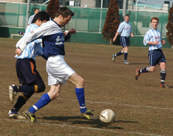
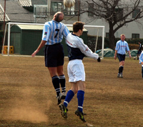

|
YC&AC, Sun 12th February. After back-to-back draws, BFC were looking to build on their solid if unspectacular start to 2006 with a first victory of the year. Away to a good YCAC side, harboring distant but achievable title aspirations, this was never going be easy, and so it proved. After a hard fought 80 minutes, in which the YCAC crowds were treated to a classic game of bruising long ball action, BFC walked away with a deserved point.
The game’s lack of quality was no refection on the players on display, more symptomatic of the dry and rutted surface that YCAC plays on each week. Some have said it must be to the home side’s advantage and certainly their style of football has been adapted to suit a surface that takes no prisoners from those of us who lack the Midas touch. The more gifted individuals within the YCAC squad will welcome the long-awaited new astro pitch.

As if missing defensive stalwarts Leigh Manson, Dave Long and Jon Best plus the attacking threat of Paul, Evans and new recruit Momo wasn’t enough, the withdrawal of the flu ridden Pink Neil on the day did not bode well for BFC. However, it was BFC who started the brighter side with an uncomfortable looking YCAC back-line on the back-foot, as the lively looking BFC strike-force caused ample problems. YCAC's high line would be their undoing; and so it was midway through the 1st half as a quickly taken free kick by Ryo was collected by the lively Jon Day who produced a well struck rising shot from some 20 yards that gave the oncoming YCAC keeper no chance. In hindsight the execution had a touch of the Robbie Fowlers about it - pure instinct, as surely the majority would have opted for a touch or two and not the first time effort, regardless it was back of the net and 0-1 BFC.
YCAC came back strongly and had a couple of chances themselves, including a superbly saved one-on-one from Jyrki, a free header that should have should’ve found the target and a (rightly) disallowed goal that saw Jyrki take a clean catch from a cross only to find himself hustled over the line by the incredulous YCAC striker; had he got a touch then perhaps the ref may have listened but as it was his cries fell on deaf ears, and not for the last time. Chances also came and went for BFC, perhaps the best of them falling to Jon Day whose shot only found the keeper’s arms when once again he’d broken free of the high YCAC back-line.

The second half started in the worst possible way for BFC as the aerial threat of YCAC proved to be their undoing. A decent corner was headed home by one of the YCAC strikers, the fact that he was perhaps their shortest player added insult to BFC injury 1-1. It’s fair to say that for the next 20 minutes BFC were up against it. YCAC looked the more determined as BFC struggled to clear their lines from goal kicks instantly putting themselves back under pressure. A substitution or two by the home side saw the introduction of an elusive right-winger who proved to be just the spark the game needed. After a mazy dribble down the right, in which he beat one, two and nearly a third player, before finally being brought to an unceremonious halt by Tesco Mark, he won the home side a penalty. That the lad had left his leg trailing like a bad fart on a busy tube was neither here nor there as the ref rightly pointed to the spot. After a re-taken penalty, re-awarded after the ref (fairly) judged, the otherwise impeccable, Jyrki to have moved off his line the otherwise quiet Joe Takeda found the back of the net. 2-1 YCAC. A first peno save in 25 years still eludes our very own Jyrki Jääskeläinen!
Trailing by a goal with 15 mins to go brought out the best in BFC. The midfield, who had battled admirably all afternoon, continued to mix it up and with but precious minutes to go and after the spurning of perhaps the game’s best chance by the YCAC substitute and a near own goal from YCAC, BFC were finally awarded a penalty when the tireless Pabs was bundled to the ground in the YCAC box. The offending YCAC player’s protests (the same one whose goal had been disallowed) once again fell on ref ears, sorry that’s deaf ears; perhaps rightly so, perhaps not, but that depends on what changing room you ended up in after the final whistle. With 3 minutes left on the clock, it was a level headed Phil Lowes who had the last laugh as he stepped up to secure a point with a thunderous penalty that came off the underside of the bar before bouncing tantalisingly over the line. 2-2 being the final score.
Report - James Morson.
|